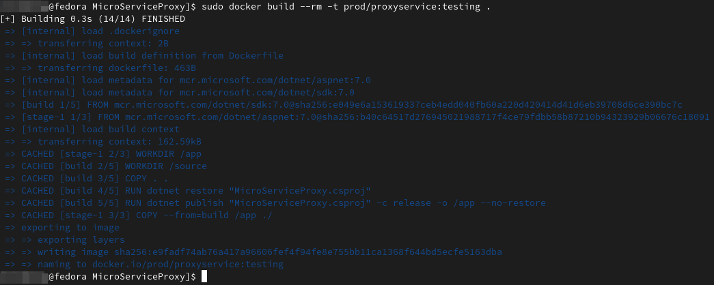

For at lave et Docker image, skal vi først lave en Docker konfigurationsfil, til det image vi laver. Også kaldet en Docker fil. Den indeholder instruktion til, hvordan det Docker image skal virke og se ud. En Docker fil kan se sådan ud (se billedet nedenunder). På linje 1 henter vi et base image og giver den et navn, så vi kan referere til den senere. Det er Docker images som kan indeholde biblioteker og runtimes, som vores microservice skal bruge. I dette tilfælde er det dotnet sdk 7.0.
På linje 2 difinere vi den mappe, som dotnet kan læse vores program fra. Linje 3 kopier vi
alt fra den mappe, som Docker filen ligger i, til den mappe, vi deffinerede på linje 2.
På linje 4 henter vi alle biblioteker, som vores program skal bruge. På linje 5 compiler
vi programmet. Og for dotnet til at compile det til produktionskode. /app
fortæller hvilken mappe, som programmet skal endnu ud i.
På linje 9 gør vi det samme som på linje 1, men vi bruger aspnet 7.0 istedet for dotnet sdk.
Det gør vi fordig at aspnet kan bruge de samme biblioteker fra dotnet sdk, men vi behøver
ikke at have adgang til alle biblioteker, når vi køre et program, som vi lige har compilet.
På linje 10 deffinere vi hvor vi skal køre programmet fra, når vi starter vores Docker image.
Linje 11 kopiere vi alt fra vores build mappe --from=build /app til den mappe
vi er i nu, ./ som er /app mappen.
linje 13 EXPOSE 5002 fortæller vores Docker image, at port 5002 er åben. Linje 15
fortæller Docker, at når vi køre det her image, så skal den køre kommandoen dotnet
med parameteren MicroServiceProxy.dll.
Nu handler det om at få lavet det Docker image, ud fra vores konfigurationsfil. Ved at åbne en
terminal i vores mappe, som indeholder den Docker fil, som vi skal bruge, skriver jeg i terminalen
sudo docker build --rm -t prod/proxyservice:testing .. Her bruger jeg bash fra /usr/bin/bash.
sudo bruges til at køre Docker some administrator (sudo står for Super User Does).
docker build siger at vi skal bygge et Docker image ud fra den Docker fil, vi har lavet.
--rm fortæller Docker, at vi skal fjerne de midlertidige filer, som Docker opretter, når man
lave et image ud fra en Docker fil. -t fortæller Docker, at vi skal give dette image et "tag",
eller et navn, så det er næmmere at finde det image, når Docker er færdig med at lave det.
prod/proxyservice er navnet på det image. Og :testing er den branch, som burde være
den samme branch, som man bruger i sit git repository, for det koden man ligger in i sit Docker image.
. betyder at vi bygger det Docker image, i den mappe, som Docker filen ligger i. Det var ret
meget at skrive om.
Når vi har kørt kommandoen, vil vores output se nogenlunde ud, som i billedet for neden.

Lige nu har vi to services. En loginservice, og en proxyservice. For at køre loginservice, så bruger vi kommandoen: sudo docker run --rm -p 5001:5001 -e ASPNETCORE_URLS=http://+:5001 prod/loginservice:testing.
For at køre proxyservicen, så bruger vi kommandoen: sudo docker run --rm -p 5002:5002 -e ASPNETCORE_URLS=http://+:5002 prod/proxyservice:testing
Og så kan vi bare bruge vores program, uden nogle problemer.